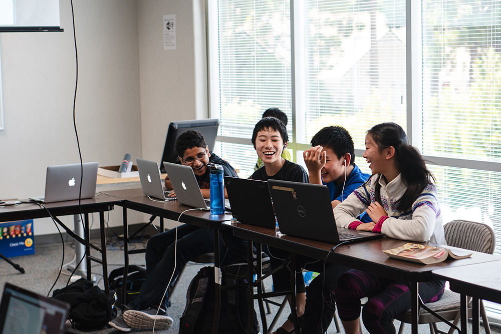
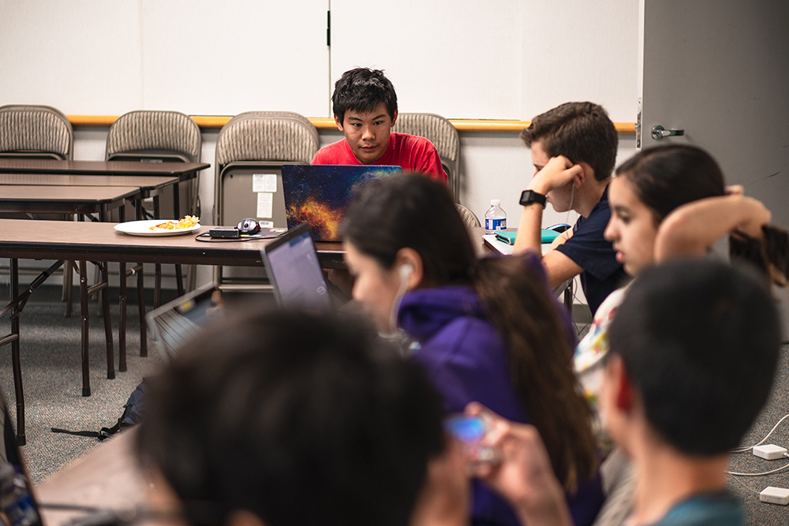
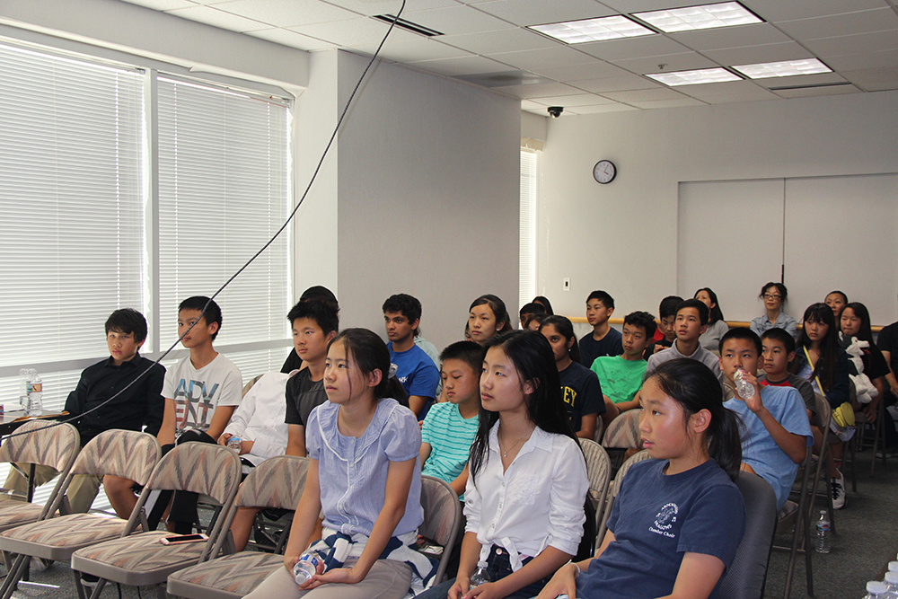
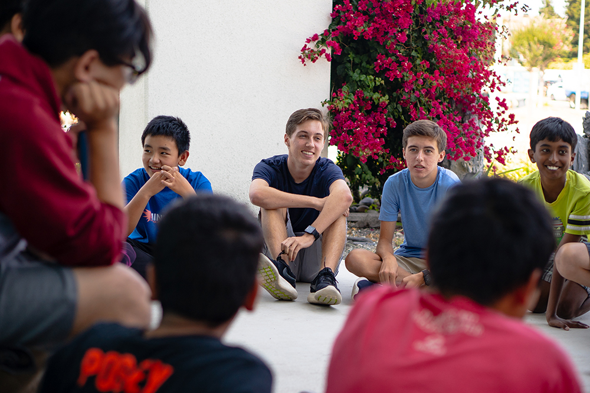

Singlehandedly generated $50,000+ in revenue over two summers.
(Website no longer up)
• Generated over $50,000 in revenue and maintained an average 9/10 rating among over 120 paying students throughout our history.
• Thought about business development and came up with various business and pricing strategies to maximize company sales; formed mutually beneficial partnerships and negotiated down building prices to minimize yearly costs
• Developed cohesive marketing plan in line with a deep understanding of the target market that constantly evolved based on gathered data feedback
I founded and maintained Mindspark Summer, a top-rated summer program dedicated to providing a fun, hands-on environment for students. I singlehandedly generated over $53,000 in revenue over the past two summers and maintained an average of a 9/10 rating among over 120 students throughout our history.
Tasks include business management, extensive online and guerilla marketing, developing the web platform, writing and developing the 400+ page curriculum, and teaching and managing day-to-day operations during the program.
I started the summer program back in 2015. Because it started late into the season due to conditions out of my control, I only managed to make five sales at incredibly low prices, teaching my new students basic robotics skills over a week while making a net negative. Despite this failure, I accumulated the experience necessary to better understand the industry to run it in the future.
Devestated by the loss, I abandoned the project for two years, only to pick it up once again with new determination in 2017. This time, with newly acquired experience, I built a web platform from scratch that handled everything from marketing surveys to landing pages (yes, there were multiple for different target audiences) to analytics to signups and payments. I wrote three hundred pages of curriculum for four different classes, and hired teachers to cover for the time slots I could not teach at, as multiple courses were running at once.
With a messily thrown-together marketing plan, and a vague vision and multiple iterations of an idea of a business plan, I got more than 40 students sign up for a camp I priced at a much higher price. Despite still having little experience and making everything last-minute, I generated $15,000 in revenue, barely able to even pay myself minimum wage.
With all this gathered experience, I decided to run the camp one final year right before I headed off to college. As a second semester senior in high school, I had a lot more time, so I poured all my time and energy into the business.
I wrote a full marketing plan, detailing a cohesive and proven-to-work timeline with my understanding of the target market. I pushed promotions more aggressively, created a new two-week course, and brought on mentors I could learn from. I learned from my previous mistakes and ran things much more cohesively with an organized plan.
I more than doubled the previous year's results generating $38,000 in revenue with 80+ students. Though spending significantly increased as well, profit margins were generally high. I refined the curriculum, increased efforts to hire better instructors, and booked more high-end, expensive locations, which resulted in a camp students rated an average of 9/10.
Understanding my target market from my years of running the camp, I decided to price my camp at a high price ($499/week), while giving absurdly high discounts with artificially-created urgency. The high prices gave the camp credibility, whereas the discounts kept prices at a reasonable level, and allowed for me to create urgency, create a referral program, and get prospective customers to fill out surveys. I later realized that Bay Area parents generally invest their kids' time and not their own money, which further justifies my initial high prices.
I put together a cohesive finance sheet which tracked spending (more than half of which was on building and competitive pay for instructors), I further refined my three-point marketing message, I found more distribution channels, and I formed partnerships with school clubs and college/career centers, all of which paid off greatly.
With my camp being newly established, I knew I had to establish brand before everybody else within parent groups, so I released a marketing survey promising $50 off once registration began. Upon submission, the user is greeted with a 48-hour timer promising $100 off for a limited time, with a 24-hour reminder email. This prompted a few early registrations because of urgency.
As March approached, I began to aggressively target parents of kids ages 11-18. I flyered everywhere, attended summer camp fairs, posted in social media parents groups with special discount codes, and sent hundreds of cold emails to school college/career centers, programming clubs, and PTSAs for promotion. I also created listings on ActivityHero and Peachjar, paying for each service several times as they'd proved to be effective.
When it came to the hiring process, I posted a lot of job listings with the promise of competitive wages for instructors. I conducted countless interviews, read through many resumes, and hand-selected a total of seven instructors over two summers that best fit our core values and will act as a good role model for the kids.

A common theme in my life has always been personal growth through entrepreneurship, and this venture is no exception. Having been the shy kid at my school, I pushed myself out of my comfort zone by cold-emailing, flyering, and teaching for hundreds of hours. Running the camp was truly a life-changing experience; I went through a tremendous amount of personal growth, and I know I made huge impact on a good number of kids' lives. I unfortunately had to retire the project because of college relocation, but I'm excited to see what entrepreneurial project I decide to take on next.
 << Go Back
<< Go Back